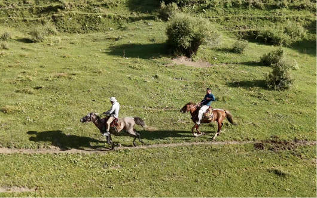
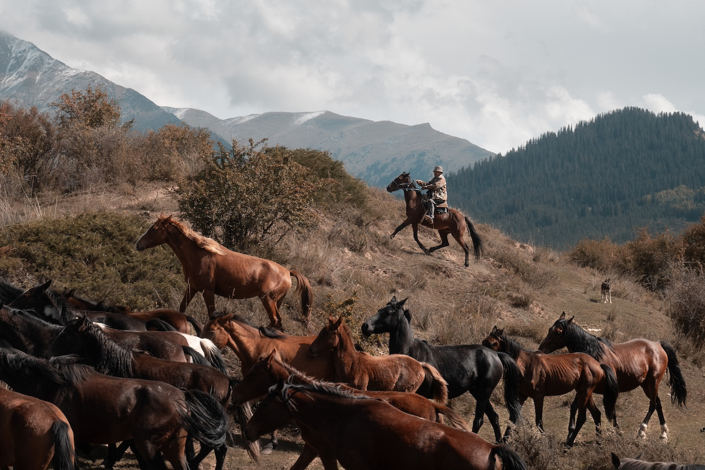
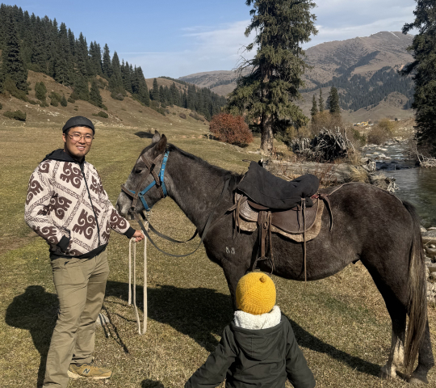
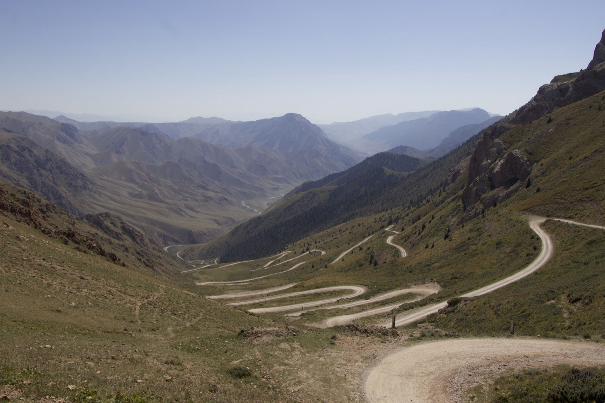
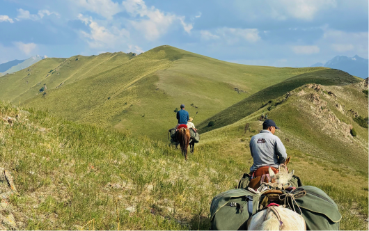
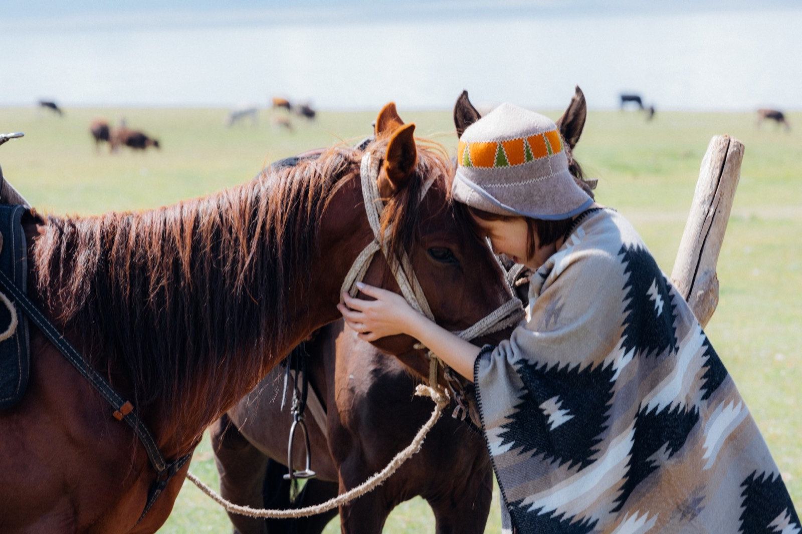
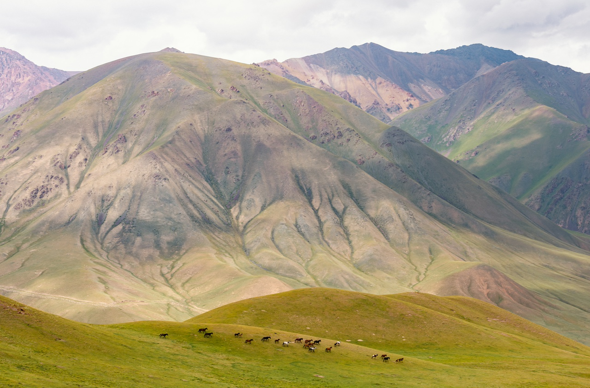
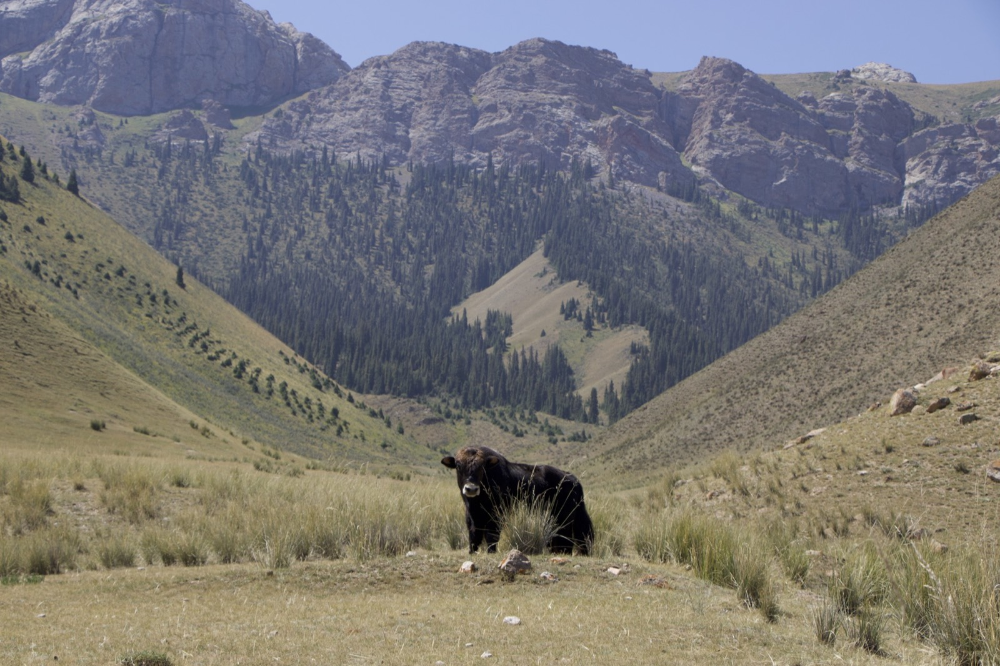

Bek's home village
A welcome dinner, a family banya and two nights in the house where Bek grew up.
貝克的故鄉：9日深度遊牧生活之旅
Ride into the mountains where our founder Bek grew up, live with his family and relatives, and spend days with nomads in the high summer pastures.
For nine days, you leave the busy world behind. You cross high mountain passes to the wide Suusamyr Valley, arrive in Bek's village to a welcome from his family, and then ride into the mountains: first to his relatives' mud-brick house at the foot of the peaks, then higher, to the nomads' summer camps.
You'll spend four days on horseback, help with milking and herding, cook with the families, and share their meals, their homes, and their everyday life. There are no hotels, no restaurants, and little or no internet for most of the trip. There's time: to slow down, to listen, and to live for a few days in a completely different rhythm.

A welcome dinner, a family banya and two nights in the house where Bek grew up.

Milk the cows and turn it into kaimak, butter, kurut and kymyz with Bek's relatives.

Ride up to the summer pastures and live in the nomads' yurts with their horses, cows and sheep.

Bek was born in a small village near Toktogul and spent his childhood summers in the mountains above it, living in a yurt with his family as they moved their animals to the high pastures. He learned to ride before he could read, helped with the milking at sunrise, and fell asleep to the sound of horses grazing outside.
This journey is his way of sharing that world. It isn't a tour of sights; it's an invitation into his home, his family, and the life he grew up with.
This is the most immersive journey we offer. Please read this section and the full itinerary carefully before booking.
Every traveler should read the full itinerary personally, not just the person who organizes the trip.
Prefer something more comfortable? Take a look at our Classic 8-Day Tour or Living with Nomads.
If you answered "yes" to all five, this journey was made for you.
1 night in a yurt in Suusamyr Valley. 2 nights in Bek's family's village house. 2 nights in a traditional mud-brick house with Bek's relatives. 3 nights in nomad yurts in the summer pastures. 1 night in a hotel in Bishkek. Rooms and yurts are simple and usually shared.
From Day 3 to Day 7 there's no shower: you wash with warm water the families prepare. You'll have a traditional banya (Kyrgyz sauna) in the village before and after the mountains.
Toilets are simple local outdoor toilets, shared with the families. There are no modern bathrooms outside Bishkek.
There's no internet or phone signal in the mountains, and only weak signal in the village. Charging is limited, so please bring power banks.
You'll ride on 4 days, about 2–4 hours each day, with experienced local horsemen. Beginners are welcome, but you should be in good health. Helmets are provided. Please tell us your riding experience and weight when you book.
All meals are cooked by the families: simple, home-style Kyrgyz food, with lots of fresh dairy, bread and meat. Please tell us about any dietary needs when you book.
Mountain weather changes quickly: sunshine, rain, cold nights, or even snow on the passes, also in summer. Your guide may adjust plans for your safety.
Much of this trip is far from roads and hospitals. Your guide carries a first-aid kit and emergency communication equipment; please tell us about any health conditions before booking.
Insurance that covers horse riding, remote areas, and emergency evacuation is required. Groups are small, to keep the experience personal and comfortable for the families.

Mornings begin with the sound of animals and the smell of fresh bread. Days are spent riding through quiet valleys, helping with the milking, and drinking tea with families who will treat you as their guests, and soon, as friends.
In the mountains, the sky is enormous, the air is clean, and the only plan is the one the day brings. Many travelers say that after a few days, they stop checking the time.
This is the Kyrgyzstan Bek grew up in. If you're ready to slow down and live it, he'd love to welcome you home.

Bishkek → Suusamyr Valley
Leave the city behind as the road climbs into the mountains, crossing a high pass above 3,000 m before descending into Suusamyr, a vast, open valley of grasslands surrounded by peaks. Here, herders bring their horses and flocks for the summer. You spend your first night in a yurt, with a quiet evening under a sky full of stars.
Suusamyr → Toktogul → Bek's village
Another spectacular drive takes you over a second high pass and down to the turquoise waters of the Toktogul Reservoir, surrounded by mountains. In the afternoon, you arrive in Bek's home village, where his family welcomes you with a traditional dinner. In the evening, relax in the family banya after two days on the road.

Village → Bek's relatives beneath the mountains
After breakfast, you saddle up for your first ride, about 2–4 hours across the fields and hills above the village, to a traditional mud-brick house at the foot of the mountains. This is the home of Bek's relatives, who have farmed and herded here for generations. You're welcomed with tea, fresh bread and cream, and spend the evening getting to know the family, watching the animals come home as the sun sets behind the peaks.
With Bek's relatives
Life here starts early, with the morning milking. You help milk the cows, then follow the milk through the day as the family turns it into kaimak (fresh cream), butter, kurut (dried yogurt balls) and kymyz (fermented mare's milk). In the afternoon, you cook together using what you've made, and in the evening, share a family meal in the house where generations of Bek's family have lived.
Up to the summer pastures
Today you ride higher into the mountains, about 2–4 hours, following the paths the herders use to bring their animals to the summer pastures. The valleys open up, the air gets cooler, and you arrive at the nomads' camp, where families live in yurts with their horses, cows and sheep all summer. You're welcomed with tea and settle into your yurt for the next three nights.

Summer pastures
Spend a full day living as the nomads do. Help the herders bring the flock out to graze, cook beshbarmak, Kyrgyzstan's national dish of hand-cut noodles and meat, together with the family, and join in traditional games in the afternoon. In the evening, sit with the family as the sun goes down over the pastures and the stars come out.

Summer pastures
Ride out with the herders into the mountains around the camp, about 4 hours, to a viewpoint high above the valleys. Stop for a picnic lunch in the mountains before returning to the camp for a last evening with the nomad families.

Summer pastures → Bek's village
Say goodbye to the nomads and ride back down to the village, about 2–4 hours. In the afternoon, the village celebrates your journey with a horse show, where local riders show the skills Kyrgyz horsemen are famous for. After a long-awaited banya, you join Bek's family for a farewell dinner.

Village → Bishkek
After a last breakfast with the family, you drive back to Bishkek, about 6–7 hours, with stops for lunch and stretching along the way. You arrive in the city in the evening, back to a hotel with a hot shower and a soft bed.
On the trip, you may taste these classic dishes:

Hand-cut noodles with boiled meat. The most iconic Kyrgyz dish, served for celebrations and to honor guests.

Fried lamb or beef with potatoes and onions: everyday nomad home cooking.

Rice slow-cooked with carrots and meat, rich and fragrant.

Hand-pulled noodles with vegetables and beef, a favorite across Central Asia.

Meat pastries baked in a traditional clay oven, crisp outside and juicy inside.

Skewers grilled over charcoal in the open air: the smell you'll meet most often on the road.
Questions about riding, the conditions or the dates? Write to us and we'll tell you honestly whether this journey is right for you.